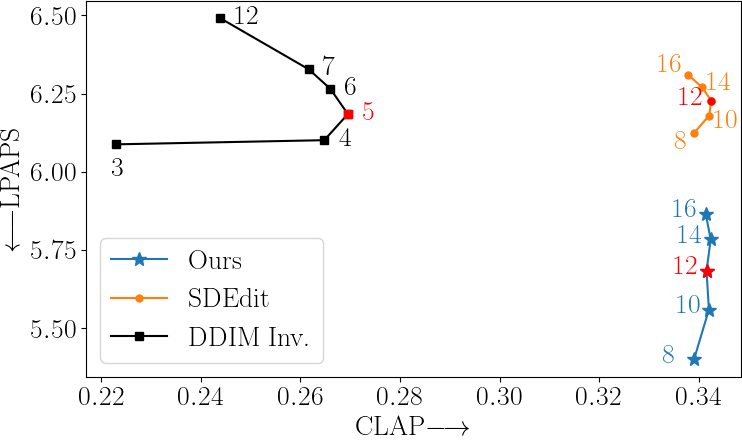

The plot compares SDEdit (Meng et al., 2021), DDIM Inversion and our method over the MusicDelta subset in MedleyDB (Bittner et al., 2014), using our prompts dataset.
Our method and SDEdit are shown with target-prompt classifier-free guidance strengths ranging between 8 and 16.
DDIM Inversion is shown with target-prompt classifier-free guidance strengths ranging between 3 and 12.
The floating numbers indicate the target-prompt classifier-free guidance strength for each method.
The results show that the chosen strength for SDEdit (12) and DDIM Inversion (5) are the best considering the tradeoff between text-adherence
and LPAPS to the original signal.
Our method can achieve even slightly better LPAPS scores while retaining the same CLAP score when lowering the strength below the value of 12, which we used in our experiments.